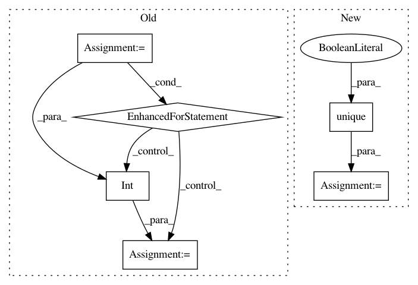

c6607119c25d0178245243ef3fdd3d176dd0d8f2,trackpy/linking/utils.py,,coords_from_df,#Any#Any#Any#,36
Before Change
Empty frames will be returned as empty arrays of shape (0, ndim).
ndim = len(pos_columns)
grouped = iter(df.groupby(t_column)) // groupby sorts by default
// get the first frame to learn first frame number
cur_frame, frame = next(grouped)
cur_frame = int(cur_frame)
yield cur_frame, frame[pos_columns].values
cur_frame += 1
for frame_no, frame in grouped:
frame_no = int(frame_no)
while cur_frame < frame_no:
yield cur_frame, np.empty((0, ndim))
cur_frame += 1
yield cur_frame, frame[pos_columns].values
cur_frame += 1
def coords_from_df_iter(df_iter, pos_columns, t_column):
A generator that returns ndarrays of coords from a generator of
DataFrames. Also returns the first value of the t_column.
ndim = len(pos_columns)
After Change
times = times[idxs]
pos = pos[idxs]
unique_times, time_counts = np.unique(times, return_counts=True)
pos_by_frame = np.split(pos, np.cumsum(time_counts)[:-1])
idx = 0
for time in range(unique_times[0], unique_times[-1] + 1):
In pattern: SUPERPATTERN
Frequency: 3
Non-data size: 6
Instances
Project Name: soft-matter/trackpy
Commit Name: c6607119c25d0178245243ef3fdd3d176dd0d8f2
Time: 2020-01-22
Author: anntzer.lee@gmail.com
File Name: trackpy/linking/utils.py
Class Name:
Method Name: coords_from_df
Project Name: dmlc/dgl
Commit Name: 4cd5c19e513561fc0f12408ce1aea0a5d16f4bbc
Time: 2019-09-15
Author: mctt90@gmail.com
File Name: python/dgl/contrib/dis_kvstore.py
Class Name: KVClient
Method Name: pull
Project Name: dmlc/dgl
Commit Name: 4cd5c19e513561fc0f12408ce1aea0a5d16f4bbc
Time: 2019-09-15
Author: mctt90@gmail.com
File Name: python/dgl/contrib/dis_kvstore.py
Class Name: KVClient
Method Name: push